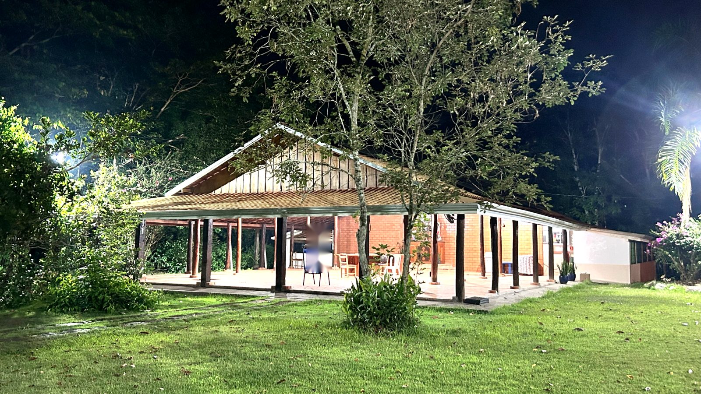

Centro de Regeneração Espiritual Casa de Jesus e Lar de Frei Manuel
Chácara Divina Luz
Rodovia 135, 3580 · Nova Londrina
Há mais de trinta anos, uma chácara na saída de Ji-Paraná reúne famílias em torno da fé, da disciplina e do cuidado com quem bate à porta. Esta é a história dela, contada por quem a construiu.
↓A casa
O Centro de Regeneração Espiritual Casa de Jesus e Lar de Frei Manuel é um centro espírita de linha apostólica. Funciona na Chácara Divina Luz, no bairro Nova Londrina, e foi fundado em 13 de fevereiro de 1991.
Hoje são cerca de 80 famílias cadastradas. A maioria mora em Ji-Paraná; outras vêm de Porto Velho, Ouro Preto do Oeste, Jaru e Cacoal. Além dos membros, a casa recebe visitantes e pessoas que chegam em busca de ajuda espiritual.
Quem frequenta segue normas claras: aqui não se bebe, não se fuma e não se usa drogas. Qualquer pessoa pode conhecer o centro e assistir aos trabalhos. Para participar, é preciso conversar antes com o dirigente e passar pelo acompanhamento da casa.
- Fundação
- 1991
- Famílias cadastradas
- 80
- Atendimentos por mês
- ~300
- Sessões por mês
- 4
- Fundadores ainda presentes
- 4
O tempo
-
1991
A fundação
Em 13 de fevereiro, um pequeno grupo funda o centro em Ji-Paraná. Muitos daquele começo já se foram. Quatro ainda frequentam a casa.
-
—
O terreno
A área da Chácara Divina Luz chega por doação, e a comunidade passa a ter um lugar próprio para crescer.
-
—
Para fora dos muros
O centro passa a atender egressos do sistema prisional num projeto de reinserção e a colaborar com a APAC sempre que é chamado.
-
Hoje
Oitenta famílias
Quatro sessões por mês, cerca de trezentos atendimentos mensais e mutirões que mantêm o espaço de pé.
A ajuda
Eu preciso fazer para quem precisa, e não para quem quer.
O trabalho assistencial nasce da procura. O centro não mantém convênio fixo com nenhuma entidade e escolhe ajudar onde a necessidade é real.
Cestas básicas e doações
Para as famílias que procuram o centro, conforme a necessidade.
Reinserção social
Um projeto com o sistema prisional atendeu egressos e condenados na volta à vida em sociedade.
APAC
O dirigente atende na APAC de Ji-Paraná sempre que é convidado.
Mutirões
Os próprios membros cuidam do espaço e das atividades da Chácara.
O lugar



A visita
nº 3580 Nova Londrina · Ji-Paraná · RO · 76915-500 Abrir no mapa →
- A casa é aberta a quem quiser conhecer e assistir aos trabalhos.
- Para participar, converse antes com o dirigente e passe pelo acompanhamento.
- Aqui não se bebe, não se fuma e não se usa drogas.
- Fotos e filmagens só com autorização. A privacidade de quem frequenta vem primeiro.